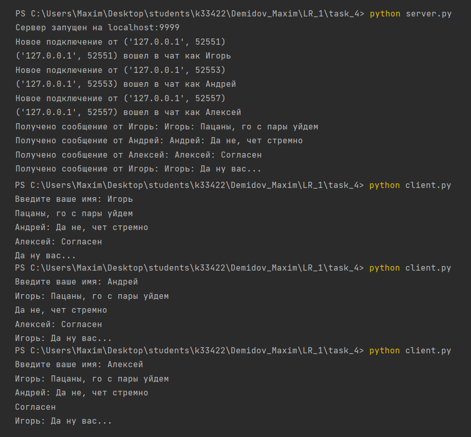

Задача №4
Реализовать двухпользовательский или многопользовательский чат. Реализация многопользовательского чата позволяет получить максимальное количество баллов.
Решение
- Сервер
import socket
import threading
def handle_client(client_socket, client_address):
print(f"Новое подключение от {client_address}")
# Получаем имя пользователя от клиента
username = client_socket.recv(1024).decode()
print(f"{client_address} вошел в чат как {username}")
while True:
try:
message = client_socket.recv(1024)
if not message:
break
message = message.decode()
print(f"Получено сообщение от {username}: {message}")
# Отправляем сообщение всем клиентам, кроме отправителя
for client in clients:
if client != client_socket:
client.sendall(message.encode())
except OSError:
break
client_socket.close()
print(f"Подключение с {client_address} закрыто")
def start_server():
host = 'localhost'
port = 9999
server_socket = socket.socket(socket.AF_INET, socket.SOCK_STREAM)
server_socket.bind((host, port))
server_socket.listen(5)
print(f"Сервер запущен на {host}:{port}")
while True:
client_socket, client_address = server_socket.accept()
client_thread = threading.Thread(target=handle_client, args=(client_socket, client_address))
client_thread.start()
clients.append(client_socket)
clients = []
start_server()
- Клиент
import socket
import threading
def receive_messages(client_socket):
while True:
try:
message = client_socket.recv(1024).decode()
print(message)
except OSError:
break
def send_message(client_socket, username):
while True:
message = input()
full_message = f"{username}: {message}"
client_socket.send(full_message.encode())
def start_client():
host = 'localhost'
port = 9999
username = input("Введите ваше имя: ")
client_socket = socket.socket(socket.AF_INET, socket.SOCK_STREAM)
client_socket.connect((host, port))
# Отправляем имя пользователя серверу
client_socket.send(username.encode())
receive_thread = threading.Thread(target=receive_messages, args=(client_socket,))
receive_thread.start()
send_thread = threading.Thread(target=send_message, args=(client_socket, username))
send_thread.start()
start_client()
Пример работы программы
Запуск server.py и 3 пользователя: